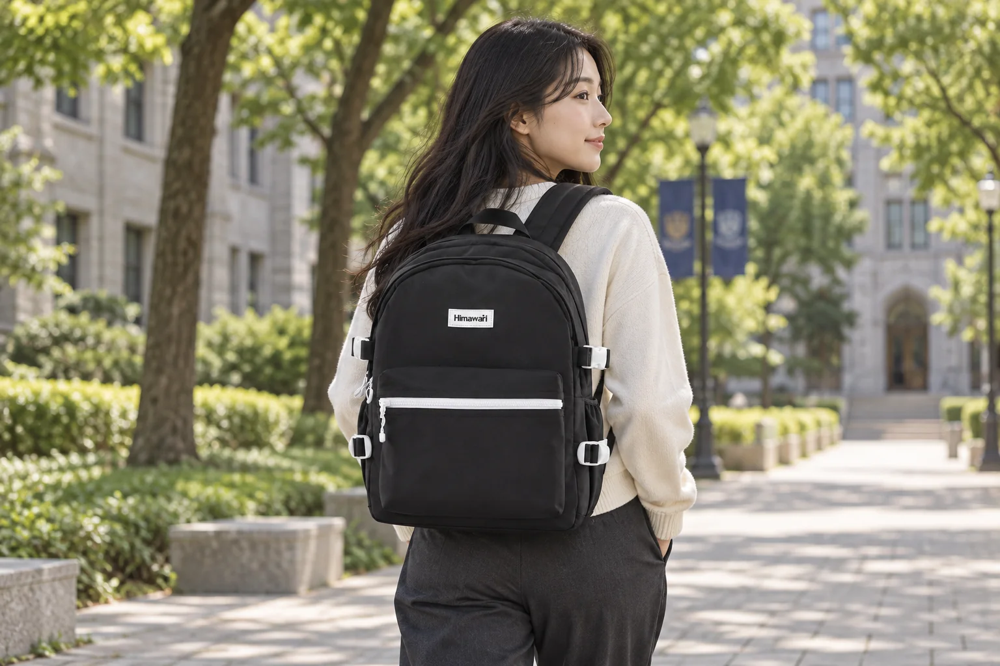

강의실을 옮기는 날의 자료 순서

대학에서 여러 강의실을 오가는 날에는 가방이 작은 작업 공간이 됩니다. 오전에 꺼낸 노트가 다음 수업의 파일 아래로 들어가고, 공강에 사용한 충전 도구를 다시 정리한 뒤 다른 건물로 이동합니다. 모든 교재를 한 장소에서 펼쳐두는 방식과는 다른 준비가 필요합니다. 과목별로 무엇을 가져갈지만 고르는 대신 언제 어떤 자료를 꺼낼지까지 생각하면 이동할 때마다 가방 전체를 다시 정리하는 일을 줄일 수 있습니다.
시간표에는 수업 이름과 함께 들를 장소를 적어볼 수 있습니다. 강의실과 다음 건물, 공강에 머물 곳을 순서대로 놓으면 실제 꺼낼 물건의 흐름이 보입니다. 수업 안내에서 확인한 준비물만 남기고 지난 자료를 전부 더하지 않는 방식도 가능합니다. 종이 교재가 필요한 수업과 기기로 작업하는 시간이 이어진다면 서로 다른 묶음이 됩니다. 준비물의 종류와 이동 시점을 같이 읽는 것이 출발 전에 할 일입니다.
첫 수업과 마지막 수업의 자료
오전에 먼저 펼칠 노트나 출력물은 꺼낼 때 다른 교재를 모두 빼지 않아도 되는 위치를 찾습니다. 오후에 쓸 자료는 닫힌 파일이나 묶음으로 정리해 둡니다. 가방 입구에 종이 끝이 걸리지 않는지, 나머지 짐과 함께 놓였을 때 모서리가 눌리는지도 봅니다. 위치 이름을 정답처럼 고정하기보다 실제 파일과 노트를 한 번 꺼내보면 됩니다. 가방을 바꾸거나 교재가 두꺼워진 날에는 다시 살펴볼 수 있습니다.
예를 들어 오전에는 종이 자료를 보고, 중간 공강에는 기기로 과제를 하며, 오후에는 별도 교재를 펼치는 일정을 가정해봅니다. 출발할 때는 첫 자료를 찾기 쉽게 두고 공강 도구는 한 묶음으로 둡니다. 오전 수업을 마친 뒤 사용한 종이는 파일로 돌려놓고 다음에 꺼낼 묶음을 준비합니다. 오전 자료를 다시 펼칠 일이 없다면 공강에는 그 파일을 닫아둔 채 작업 도구만 꺼내고, 공강을 마친 뒤 오후 교재를 찾기 쉬운 위치로 옮길 수 있습니다.
기기와 파일을 담을 백팩을 살필 때에는 자신의 물건을 기준으로 대조해야 합니다. Himawari No.9290 제품 정보의 외부 크기는 가로 30 × 세로 42 × 폭 18cm입니다. 기기의 인치 표기나 파일의 규격 이름만 보고 수납을 결정하지 않고 케이스를 포함한 실제 크기와 입구, 다른 짐이 함께 있는 상태를 확인합니다. 필요한 자료를 담은 뒤 메고 이동해보면 빈 가방에서 생각한 배치와 어떤 차이가 있는지 볼 수 있습니다.

필기구는 교재를 꺼낼 때 함께 찾을 수 있는 묶음으로 정리할 수 있습니다. 펜을 종이 사이에 끼워두면 페이지를 펼칠 때 어디로 움직였는지 다시 살펴야 할 수 있습니다. 작은 필통에 필요한 것을 남겨두고 수업이 끝난 뒤 돌아갈 자리를 정하면 됩니다. 수업 중 받은 추가 종이가 있다면 다음 수업 자료에 바로 섞지 않고 과목별 파일로 돌려놓을 수 있습니다. 당일에 생기는 자료의 자리도 생각해야 가방의 순서가 유지됩니다.
공강에 펼칠 작업의 범위
공강이 짧다면 할 작업의 범위를 먼저 고를 수 있습니다. 다음 수업까지 남은 시간뿐 아니라 자리 잡기와 정리, 건물 이동에 쓰는 시간을 함께 생각합니다. 과제 전체를 펼칠지 참고 자료 하나를 읽을지에 따라 필요한 짐이 달라집니다. 예를 들어 이동 전에 짧은 문서만 확인할 계획이라면 모든 교재와 충전 도구를 꺼내지 않아도 됩니다. 공강 동안 실제로 마칠 수 있는 작업을 정하면 회수할 물건의 개수도 줄어듭니다.
도서관이나 라운지에서는 공간의 사용 규칙에 따라 가방을 두고 필요한 묶음만 꺼냅니다. 충전 도구를 연결했다면 자리에서 일어날 때 콘센트까지 확인할 수 있게 생각해두세요. 가방 안에 남은 도구와 책상 위에 나온 도구를 구분하면 이동 준비에서 빠뜨릴 범위가 줄어듭니다. 노트북을 먼저 넣었다고 작업이 정리된 것은 아니므로 연결했던 부속품과 개인 자료도 함께 회수해야 합니다.
동행자와 자리를 함께 쓰는 경우에는 개인 물건이 공용 면에 섞일 수 있습니다. 필기구나 어댑터가 비슷하면 사용한 뒤 자신의 묶음으로 돌려놓습니다. 잠시 자리를 비울 때의 가방과 귀중품 관리는 장소 안내와 실제 조건에 따라 판단하세요. 다음 수업으로 바로 이동한다면 돌아와서 다시 모든 짐을 펼치지 않아도 되는 상태로 정리해둘 수 있습니다. 공유한 자료가 있다면 자신의 파일인지 빌린 것인지도 확인합니다.
교실을 나설 때 바꾸는 순서
수업이 끝나면 사용한 자료를 먼저 닫고 정한 묶음으로 돌려놓습니다. 다음 수업에서 바로 펼칠 자료가 있다면 찾기 쉬운 위치로 바꾸세요. 책상 위와 의자 옆, 충전하던 위치를 돌아본 뒤 가방 여밈을 닫습니다. 복도에서 급히 자료 순서를 바꾸기보다 앉았던 자리에서 정리하면 종이나 작은 물건을 떨어뜨렸을 때 확인하기 쉽습니다. 이동 중에는 가방을 열린 채로 메지 않도록 닫힌 상태를 확인하면 됩니다.
건물 사이를 이동할 때는 사람의 흐름과 가방이 차지하는 공간을 봅니다. 좁은 복도나 줄지어 움직이는 자리에서 등을 돌리면 주변 간격이 달라질 수 있습니다. 교통이나 출입에 필요한 물건을 찾을 때에도 멈출 수 있는 위치에서 가방을 열면 됩니다. 당일 가져올 자료가 예상보다 늘었다면 그대로 밀어 넣기보다 종이를 한 묶음으로 만들거나 별도 운반이 필요한지 판단할 수 있습니다. 그날의 추가 짐도 다음 이동 조건에 포함됩니다.
집에서는 사용한 자료를 과목별 보관 위치로 옮기고 다음날 시간표와 대조합니다. 오늘 받았지만 더는 들고 다닐 필요가 없는 종이는 가방에 계속 남겨두지 않아도 됩니다. 공강에 쓴 도구가 원래 묶음으로 돌아왔는지 확인하고 실제로 쓰지 않은 교재도 구분해봅니다. 하루의 가방을 그대로 다음날 메기보다 첫 수업과 이동할 장소가 무엇인지 다시 읽으면, 필요한 자료와 꺼낼 순서를 일정에 맞춰 바꿀 수 있습니다.